Что делает каждая кнопка¶
У аддона нет своей панели: он добавляет один пункт в меню Add > Mesh, а все настройки живут в панели Adjust Last Operation — той, что раскрывается в левом нижнем углу вьюпорта после действия или по F9. Панель показывает разный набор настроек в зависимости от того, что аддон делает: строит новый цилиндр или перестраивает выделенный. Ниже разобраны оба набора и таблица правила из настроек аддона.
Где он лежит¶
Один пункт, сразу под встроенным Cylinder.
Add → Mesh → qc Smart Cylinder¶
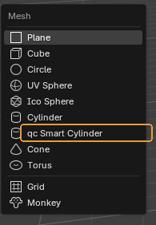
Единственная точка входа. Пункт стоит строго под встроенным Cylinder, чтобы рука шла туда же, куда и раньше.
Когда пригодится. Что произойдёт по нажатию, зависит от выделения. Ничего не выделено — появится новый цилиндр в 3D-курсоре. Выделен меш с цилиндрической формой — аддон перестроит его. Режим потом можно переключить в панели Adjust Last Operation.
Обратите внимание
Если выделено что-то, в чём цилиндрической формы нет, аддон не создаст неожиданный цилиндр рядом, а напишет причину в отчёте.
New Cylinder — новый цилиндр¶
Настройки в панели Adjust Last Operation, когда выбран режим New Cylinder. Диаметр меняется — число сечений пересчитывается тут же.
Mode¶
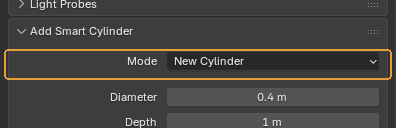
Переключатель между New Cylinder и Fix Selected.
Когда пригодится. Когда аддон угадал не то. Например, выделен цилиндр, но нужен не ремонт старого, а новый рядом: переключите на New Cylinder прямо в панели, не снимая выделения.
По умолчанию: выбирается сам по выделению в момент вызова
Diameter¶
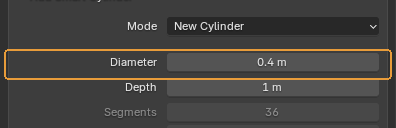
Диаметр цилиндра — не радиус. Из него и считается число сечений.
Когда пригодится. Главное поле режима New. Вводить можно в любых единицах: наберите 40 cm, и Blender переведёт сам. Масштаб сцены (Scene → Units → Unit Scale) аддон учитывает — правило считает по настоящим сантиметрам, а не по условным единицам.
По умолчанию: 0.4 m, то есть 40 см — по таблице 36 сечений.
Depth¶
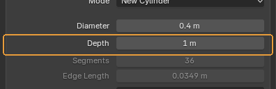
Высота цилиндра.
Когда пригодится. На число сечений не влияет никак: правило смотрит только на диаметр.
По умолчанию: 1 m
Segments и Edge Length¶
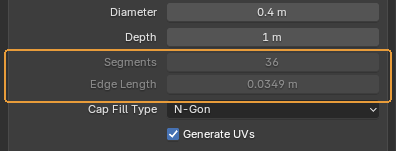
Два поля, которые нельзя редактировать: сколько сечений выдало правило и какой длины получилось ребро.
Когда пригодится. Это способ увидеть, что правило вообще делает. Потяните диаметр — число сечений пойдёт ступенями, а длина ребра останется примерно на месте. Ради этого таблица и заведена: ребро одной длины на мешах любого размера.
Обратите внимание
Длина ребра — настоящая хорда между соседними вершинами, а не длина дуги.
Cap Fill Type¶
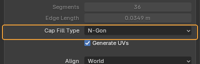
Чем закрыты торцы: N-Gon, Triangle Fan или ничем.
Когда пригодится. То же самое, что у встроенного Cylinder, и означает то же самое. N-Gon — обычный выбор для лоуполи: одна грань, которую легко выделить и подрезать.
По умолчанию: N-Gon
Generate UVs¶
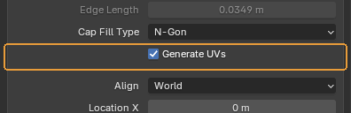
Сразу сделать простую развёртку.
Когда пригодится. Оставляйте включённым: развёртка всё равно понадобится, а пустой меш без UV-слоя потом легко проскочить мимо запекания.
По умолчанию: включено
Align, Location, Rotation¶
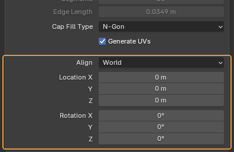
Где и как встанет новый цилиндр.
Когда пригодится. Стандартный блок Blender, одинаковый у всех примитивов. Align: View ставит цилиндр лицом к камере, 3D Cursor — по повороту курсора.
По умолчанию: Align: World, положение — 3D-курсор.
Fix Selected — перестройка выделенного¶
Тот же оператор, но вместо нового цилиндра он перестраивает уже существующие формы. Аддон сам переключается в этот режим, если при вызове что-то выделено.
Segments — Per Section или Whole Form¶
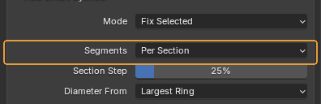
Считать число сечений отдельно для каждой секции формы или одно на всю форму целиком.
Когда пригодится. Per Section — для деталей переменного диаметра: токарных, труб с переходами, стержней с утолщениями. Широкая часть получит больше сечений, узкая — меньше, между ними аддон построит треугольные мосты. Whole Form — когда деталь должна остаться одним ровным цилиндром без переходов. Число берётся с одного кольца, выбранного ниже.
По умолчанию: Per Section
Section Step¶
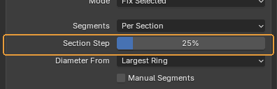
Насколько должен измениться диаметр между соседними кольцами, чтобы аддон счёл это началом новой секции.
Когда пригодится. Появляется только в режиме Per Section. Секций получилось слишком много — поднимите значение, деталь разбилась грубее, чем надо — опустите.
По умолчанию: 25 %
Обратите внимание
Плоская ступенька между двумя радиусами начинает новую секцию всегда, независимо от этого числа.
Diameter From¶
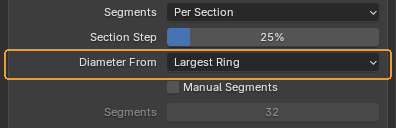
Какое кольцо задаёт диаметр секции, когда кольца в ней разного размера: Largest Ring, Average Ring или Smallest Ring.
Когда пригодится. По умолчанию решает самое широкое кольцо — так силуэт в самом заметном месте останется гладким. Average пригодится на длинных конусах, где верхнее кольцо намного уже нижнего и «по самому широкому» выходит избыточно.
По умолчанию: Largest Ring
Manual Segments¶
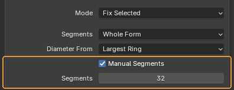
Отменить правило и перестроить с тем числом, которое введено руками.
Когда пригодится. Для случаев, где правило не при чём: соседняя деталь уже собрана на 24 сечениях, и новую надо подогнать под неё. Или форма, которую аддон пропустил как неоднозначную, — число можно назначить силой.
По умолчанию: выключено
Обратите внимание
Поле числа серое, пока галочка снята: это не сломано, так видно, что значение сейчас ни на что не влияет.
Отчёт¶
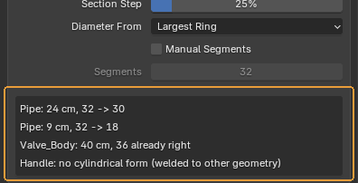
Построчно: что аддон нашёл и что с этим сделал. По строке на форму.
Когда пригодится. Читать всегда, а не только когда что-то пошло не так. 40 cm, 36 → 82 — диаметр, было и стало; already right — форма и так правильная, её не трогали; no cylindrical form — аддон ничего не узнал и ничего не испортил; capped: check the object scale — число упёрлось в потолок из настроек, и это почти всегда неверный масштаб объекта, а не исполинская деталь.
Обратите внимание
Строк показывается не больше двенадцати, остальные сворачиваются в «… and N more». Не узнаны бывают формы, приваренные к остальной геометрии, меши с shape keys и замкнутые кольца секций — это известные границы, а не поломка.
Настройки аддона¶
Edit → Preferences… → Add-ons → QC Smart Cylinder. Здесь лежит само правило: по какой таблице считается число сечений.
Таблица опорных точек¶
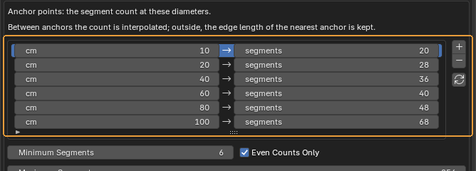
Само правило: при каком диаметре сколько сечений. Строки — опорные точки, а не диапазоны.
Когда пригодится. Между точками число интерполируется, поэтому ступеней получается больше, чем строк: 15 см → 24, 30 → 32, 50 → 38. За краями таблицы держится длина ребра крайней точки — ниже 10 см число падает пропорционально диаметру, выше 100 см так же растёт.
Что получится. Кнопки справа: + добавляет точку на 10 см выше самой большой, – удаляет выбранную, круговая стрелка возвращает студийную таблицу. Правка действует сразу и на новые цилиндры, и на перестройку — правило читается при каждом вызове.
По умолчанию: студийная таблица: 10 см → 20, 20 → 28, 40 → 36, 60 → 40, 80 → 48, 100 → 68.
Обратите внимание
Таблица живёт в настройках Blender, а не в файле сцены: она общая для всех сцен на этой машине и переживает перезапуск. Если правите таблицу под конкретный проект, помните, что соседний проект на той же машине увидит те же значения.
Minimum, Maximum Segments и Even Counts Only¶
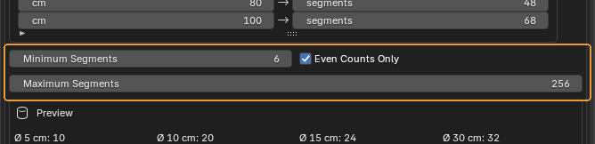
Границы числа сечений снизу и сверху и округление до чётного.
Когда пригодится. Минимум держит совсем мелкие детали от вырождения: без него правило на диаметре 2 см выдало бы четырёхгранник. Чётность нужна, чтобы цилиндр остался симметричным по обеим осям — так его проще резать пополам и зеркалить.
Что получится. Максимум — страховка от неверного масштаба. Ассет, у которого сантиметры прочитаны как метры, даёт кнопку «диаметром» в двадцать метров, и правило честно насчитывает ей больше тысячи сечений на кольцо. Теперь такая форма упирается в потолок, а в отчёте появляется capped: check the object scale.
По умолчанию: минимум 6, максимум 256, чётность включена
Обратите внимание
На Manual Segments потолок не действует: если число назначено руками, значит его и хотели.
Preview¶
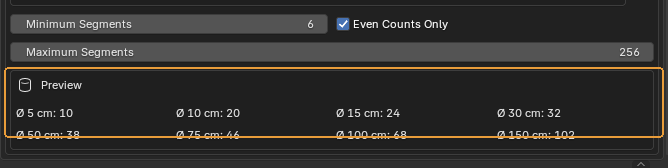
Что правило выдаёт на восьми характерных диаметрах.
Когда пригодится. Проверять правку, не выходя из настроек: поправили точку — строчка пересчиталась. Быстрее, чем строить пробные цилиндры.
Страница собрана из файла content/qc-smart-cylinder.ru.yml. Снимки сделаны в QC Smart Cylinder 1.6.2.